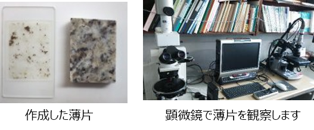
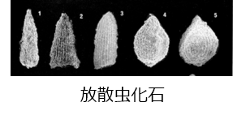

1-3-1. 試料の分析方法
以下のような試料の分析は分析機器や設備がないとできないので、個人ではなかなか行えません。興味のある方は、大学や地元の自然科学館、公的機関などに相談してみましょう。
岩石鑑定
肉眼やルーペでは判別できないくわしい岩石の特徴（岩相）やどのような鉱物が含まれているか（組成）は、実体顕微鏡、偏光顕微鏡、電子顕微鏡、X線回析装置などの機器を使って鑑定します。

【岩石薄片をつくる】
顕微鏡で観察できるようにした岩石のプレパラートを薄片といいます。 薄片を作るには、岩石をダイヤモンドカッターで切断したうえに、電動やすりで薄く削って磨いてあげる必要があります。 きれいな薄片をつくるには熟練が必要です。
化石鑑定
地層中に化石を採取した場合は、その化石を採取した地層の時代環境を知る手掛かりとなります。
【大型化石のクリーニング】
露頭で発見した化石は、その岩石から取り出してあげないと、その種類の特定（同定）ができません。 岩石中から化石を取り出す作業をクリーニングいいます。きれいにクリーニングするには熟練が必要です。
【微化石とは】
岩石中には、放散虫、有孔虫、花粉など顕微鏡でないと観察できない小さい化石が含まれていることがあります。 このような化石を微化石といいます。

地質年代特定
地層中の岩石や含まれる鉱物の放射年代測定を行うと、その地層ができた年代を知ることができます。 また、産出する化石が示準化石の場合は、その地層のおおよその年代が特定できます。 その他、地層中の地磁気の方向を測定して年代を特定する方法もあります。
【放射年代測定】
岩石中に含まれる同位体元素の崩壊速度（半減期）を利用して、その岩石中に残った同位体元素の割合を測定・計算して岩石の年代を特定する方法です。 下記のように試料の種類や目的によって、測定方法を使い分けます。
- 主な測定法
- 14 C（炭素14）法 ：半減期約5,730年の炭素14を使用。数万年以降の試料に有効で、考古学等でもよく利用される。
- K-Ar法 ： 10億〜数10万年の年代測定に利用される
- その他 : RbーSr法、ウラン系列、フィッショントラック法等